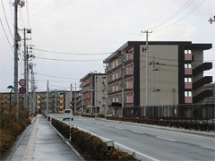

3.11を忘れない・・
みやぎ生協から被災地・宮城のいまをお伝えします
第54回 2018年2月5日
復興公営住宅、家賃上昇に不安
｢家賃を払いきれないようになったら、恥ずかしがらずに生活保護の手続きをした方がいいですよ」。石巻市のぞみ野第二町内会長の増田敬さんは、住民にそう話すことがあります。
復興公営住宅の入居者のうち政令月収（※1）8万円以下の低所得世帯は、国の「家賃低減事業」で家賃が低く抑えられています。5年間は少ない負担で住むことができますが、6年目から少しずつ上がり、11年目には一般の公営住宅と同じになります。
宮城県の復興公営住宅入居世帯のうち約7割は政令月収8万円以下の低所得世帯で、その多くは高齢者です。
「石巻市の場合、政令月収0円の人の家賃は当初6,700円で11年目以降は約3倍になります（※2）。今はまだ実感できませんが、収入の少ない高齢者が安心して入っていられる状況にありません」。
また、災害などで財産を失った時に適用される｢雑損控除｣も期限(東日本大震災は特例で5年)があります。雑損控除が無くなると政令月収が上がり、家賃にも影響します。
復興公営住宅は、被災した人たちにとってようやく落ち着いた“安住の地”です。のぞみ野第二町内会は生活困窮世帯の町内会費を免除したり、家賃の問題も気軽に相談できるよう顔なじみの関係を増やしたり、互いに支え合うコミュニティづくりに取り組んでいます。
｢家賃を払えずに復興公営住宅を出ていく人が多くなれば、それだけで社会問題になるでしょう。特に高齢者は民間アパートに入るのが難しいので、ここを出たら本当に困ると思います。私たちも、家賃上昇に備えて生活設計を立てようと話し合っていますが、行政には低所得世帯も安心して住み続けられる施策を考えてほしいです｣。（※3）
被災自治体は家賃低減事業の延長を国に要望していますが、復興庁は「家賃補助は自治体ごとに対応が可能」として予定通り10年で事業を終了する予定です。長い避難生活を経て復興公営住宅に入居した人たちが、再び“安住の地探し”をしなくて済むよう、早急に知恵を絞ることが求められています。
- ※1
- 世帯全員の1年間の所得の合計から公営住宅法上の控除を行なった額を12カ月で割った収入。
- ※2
- 2017年12月25日時点の試算。石巻市の復興公営住宅1LDKで11年目も政令月収0円の場合。
- ※3
- 2018年1月、石巻市は独自に低減期間を20年まで延長する方針を固めました。
|  | |
| ｢私自身も家賃が3倍になったら大変。 他の住民も不安だと思う｣と話す増田敬（ますだ・けい）さん。 |
石巻市新蛇田地区の復興公営住宅。 昨年11月地名が「のぞみ野」に変更になりました。 |
 前の記事 第53回「仮設住宅で転居を待つ日々」（2018年1月5日）
前の記事 第53回「仮設住宅で転居を待つ日々」（2018年1月5日）